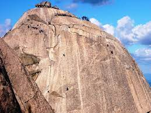

ГОРЫ
Все мы горы любим и часто в них ходим. А готовы ли к вопросу в лоб: “А что это, горы?” Не каждый даст развернутый ответ, выдав лишь дежурную фразу из песни, что горы – это так хорошо, что лучше них – только те же горы. Поэтому, создали памятку о горах. Что это, как они появились, какие бывают и почему в них воздух особый.
Что такое горы?
Горы — форма рельефа, изолированное резкое поднятие местности с выраженными склонами и подножием или вершина в горной стране, утверждает Википедия. И правда. Еще считают, что горы – местность на суше, расположенная выше отметки в 500 метров над уровнем моря.
Как появляются горы?
А как горы появляются? Есть горы тектонического происхождения, вулканического и денудационного (эрозионного). Разберем по полочкам смысловую нагрузку этого набора терминов. Тектонического происхождения: двигались под действием подземных сил плиты земной коры, уперлись друг в друга и вспучились. Или одна плита полезла под другую и та приподнялась, и вот они – горы! Правда, происходит это очень медленно, растут горы так на считанные миллиметры в год. Вулканического происхождения: из жерла вулкана из глубин Земли при извержении натекает лава – расплавленный камень, охлаждается, застывает. Цикл повторяется многократно, бугор из застывшей лавы все выше. И, вот, перед нами гора вулканического происхождения. Демавенд, Арарат, Килиманджаро – все они уснувшие вулканы. А Этна в Италии – не уснувший.
Из чего состоят горы?
Многие из этих выходов – слоистые горные породы. Такими горными породами бывает песчаник или известняк. Слоистые горные породы образуются на дне водоемов, их еще называют осадочными.лой за слоем оседает песок или известковые панцири морских организмов на дно и после ряда метаморфоз и становятся такими породами. Например, известняки из которых сложен Копетдаг – наследники древнего моря Тетис. Оно миллионы лет назад плескалось на этом месте. В них часто можно найти окаменелости – остатки древних морских животных. Другие выходы горных пород – без слоев, единой массой, разбитой трещинами, например, гранит и базальт. Массивные горные породы – наследники расплавленной магмы, которая рвалась вверх из земных глубин. Если в ходе извержений магма излилась лавой на поверхность, где застыла и затвердела, то образуются горные вулканические породы: порфир, базальт. А если магма осталась в толще земной коры, где и затвердела? Тогда получаются глубинные массивные горные породы. Самая распространенная из них – гранит. В его состав в различных соотношениях входят полевые шпаты, слюда, кварц и другие минералы. Учитывая, что часто такая магма застывает в трещинах, заполняя их и образуя жилу, такие породы часто называют жильными. Каменные склоны покрывает почва, которая питает растения, а они удерживают ее корнями, не давая смыть дождям. Почва эта практически такая же, как на равнинах. Только зачастую прикрывает скалы не столь мощным слоем и менее плодородна. Образуется она за счет выветривания горных пород, принесенной ветром пыли и перегнивших органических остатков.